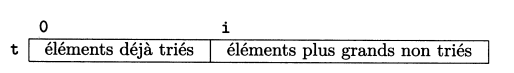

Tri par sélection
Principe
On commence par rechercher le plus petit élement du tableau puis on l'échange avec le premier élement. Ensuite, on cherche le deuxième plus petit élement et on l'échange avec le deuxième élément du tableau et ainsi de suite jusqu'à ce que le tableau soit entièrement trié.
Voir l'animation proposée.
Algorithme et exemple d'implémentation en python
On peut formaliser l'algorithme du tri par sélection avec le pseudo-code suivant:
1 2 3 4 5 6 7 8 | |
Travail
- Appliquer cet algorithme à la main sur le tableau
t = [3, 4, 1, 7, 2]. - donner une implémentation possible en python de cet algorithme et tester.
1 2 3 4 5 6 7 8 9 10 11 12 13 14 15 16 | |
1 2 3 4 | |
Validité de l'algorithme
La terminaison est assurée car l'algorithme fait intervenir deux boucles bornées (boucle for).
Par ailleurs, la situation au tour de boucle peut être représentée de la manière suivante:

Tous les éléments d'indice compris entre 0 et inclus sont triés et ils sont tous inférieurs ou égaux aux éléments de la partie non triée, se trouvant entre et .
La preuve de cette proposition logique peut être délicate à établir en classe de 1re. Cette proposition est un invariant pour l'algorithme Tri_selection.
Définition
Un invariant de boucle est un prédicat (proposition logique) qui est:
- initialement vrai;
- vrai à l'entrée d'une itération ainsi qu'à la sortie de celle-ci
Vocabulaire
Le terme correction est à prendre ici au sens correct.
Trouver le bon invariant garantit que l'algorithme renvoie un résultat conforme aux spécifications et assure ainsi sa correction partielle. La combinaison de la correction partielle et de la terminaison permet de conclure à la correction totale de l'algorithme.
Complexité en temps
Le contenu de la boucle interne prend un temps d'exécution constant. Evaluons le nombre de fois qu'elle est exécutée.
Pour , elle est exécutée fois.
Pour , elle est exécutée fois.
Si on généralise, le nombre d'exécutions de la boucle interne est:
Cette somme correspond à la somme des termes consécutifs d'une suite arithmétique, dont la valeur pour est donnée par:
Pour une taille très grande de l'entrée, le terme en devient prépondérant. Autrement dit, le nombre d'opérations effectuées, donc le temps d'exécution, est proportionnel à .
La complexité du tri par sélection est quadratique.
Ce qu'il faut retenir
Le tri par sélection (du minimum) consiste à chercher le plus petit élément de la partie de tableau non triée et à le mettre à sa place définitive.
Ce problème est résolu habituellement par un algorithme faisant intervenir deux boucles bornées. La terminaison est donc assurée.
Un invariant de boucle permet de conclure à sa correction partielle. La conjugaison de ces deux propriétés assure la correction totale de l'algorithme proposé.
Cet algorithme a une complexité temporelle quadratique.
Application directe
En supposant que le tri par sélection prenne un temps directement proportionnel à et qu'un tri de 16000 valeurs nécessite 6.8 s. Calculer le temps nécessaire pour le tri d'un million de valeurs avec cet algorithme.
Exercice: temps d'exécution
Pour mesurer le temps d'exécution d'un programme, on importe la fonction time du module time. Cette fonction renvoie le temps en secondes écoulé depuis le janvier 1970.
Le code qui suit permet par exemple d'afficher le temps pris par l'exécution du tri d'un tableau.
1 2 3 4 | |
- Construire un tableau de 3000 entiers pris au hasard entre 1 et 10000, bornes comprises. Mesurer le temps d'exécution du programme de tri sélection et de tri insertion pour trier ce tableau. Attention: il faut reconstruire le tableau entre les deux tris. Quel commentaire peut-on faire concernant les deux résultats ?
- Construire un tableau de 3000 entiers de 0 à 2999, bornes comprises. Mesurer le temps d'exécution du programme de tri sélection et de tri insertion pour trier ce tableau. Quel commentaire peut-on faire concernant les deux résultats ?
- Mesurer sur un tableau de 100000 entiers, choisis de manière aléatoire entre 1 et 100000, le temps d'exécution de la méthode
sort()de python. Syntaxe:t.sort(). Commentez.